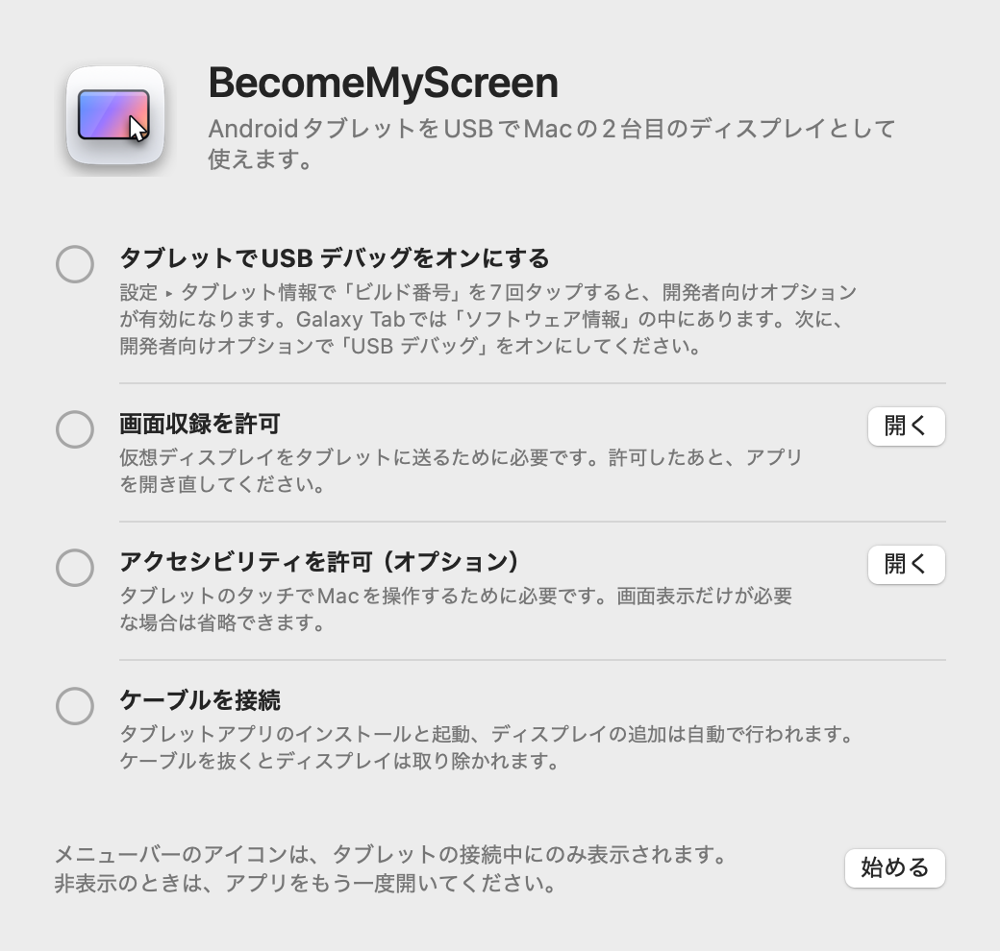
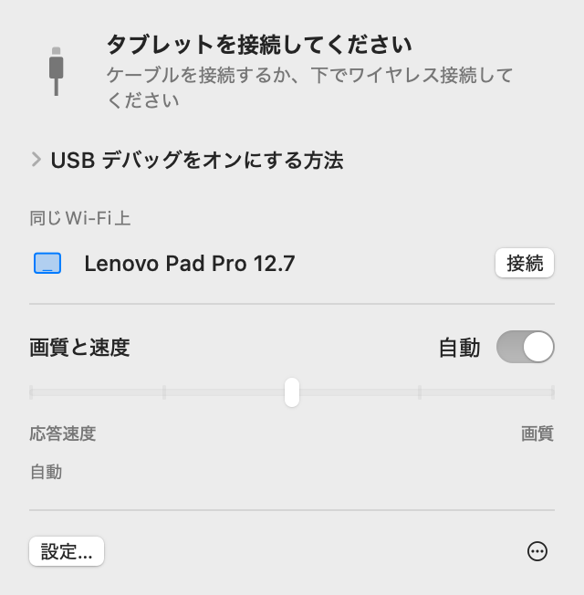
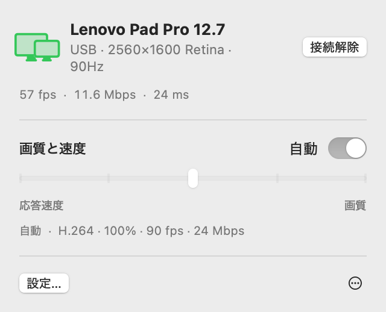
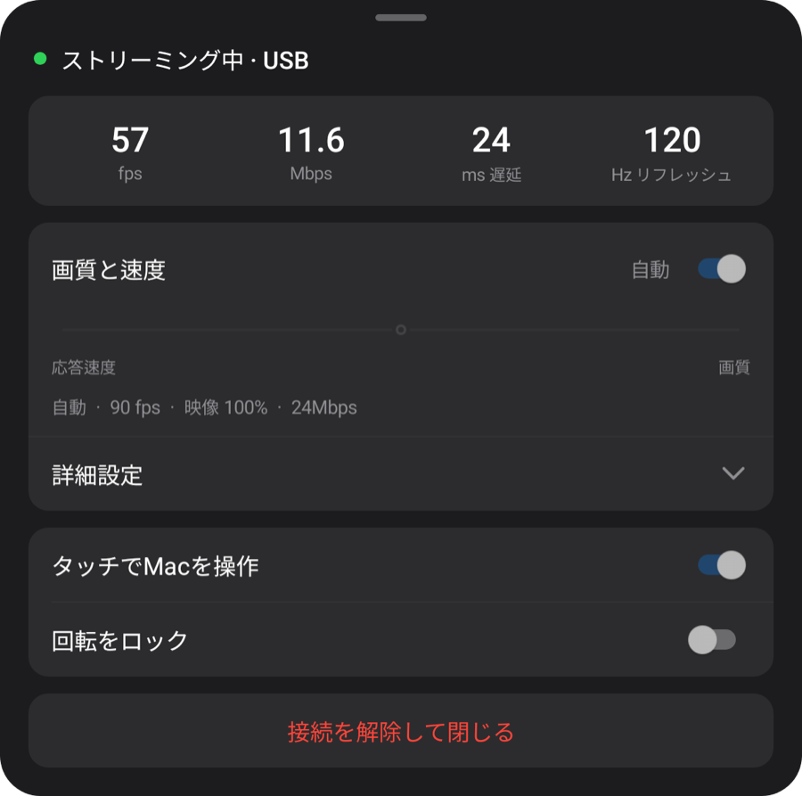
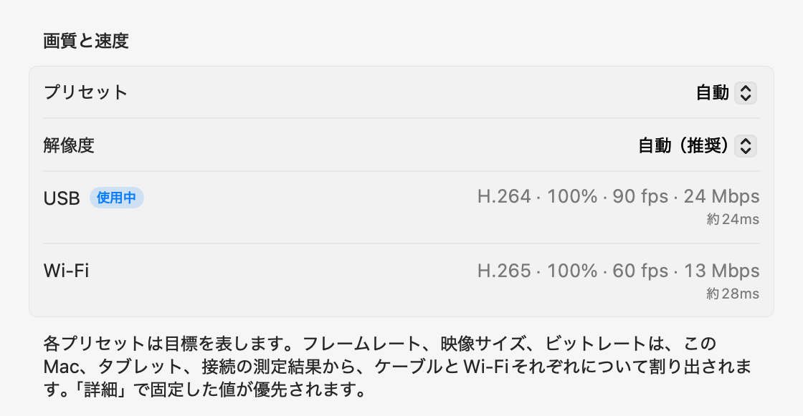

macOS + Windowsプレビュー
タブレットに広がる、
パソコンの画面。
Macでは追加ディスプレイに。Windowsではミラーリングのプレビュー版に。AndroidタブレットをUSBで接続すると、パソコンがタブレットアプリをインストールして起動します。
zipを開き、アプリをアプリケーションフォルダに移動して開きます。初回の接続方法はセットアップを参照してください。
パソコンでこのページを開き、Mac版またはWindows版をダウンロードしてください。

1.0.1 Preview 1
Windowsプレビュー
Windows 11にも対応を開始。Intel/AMD x64とARM64のネイティブアプリを1つのパッケージで提供します。

ZIPをすべて展開し、Start-Mirroring.cmdを実行してください。仮想マシンではStart-Mirroring-VM.cmdを使います。タブレットのUSBデバッグを有効にし、接続を許可してください。初回起動時に映像エンジンを自動取得するため、インターネット接続が必要です。
以下の設定・機能・性能測定はMac版のものです。Windowsについては上のプレビュー案内をご覧ください。
セットアップ
セットアップは最初の1回だけです。その後は、ケーブルを接続するとディスプレイが追加され、同じWi‑Fi上ではケーブルなしで接続されます。
-
Macアプリをインストール
ダウンロードしたzipを開き、BecomeMyScreenをアプリケーションフォルダに移動して開きます。画面収録を許可したら、アプリをもう一度開きます。
-
タブレットでUSB デバッグをオンにする
設定 › タブレット情報で「ビルド番号」を7回タップすると、開発者向けオプションが有効になります。Galaxy Tabでは「ソフトウェア情報」の中にあります。次に、開発者向けオプションで「USB デバッグ」をオンにします。
-
ケーブルを接続
タブレットにUSB デバッグを許可するかどうかの確認が表示されたら、「このパソコンからのアクセスを常に許可する」にチェックを入れて「許可」をタップします。Macがタブレットアプリをインストールして開き、ディスプレイを追加します。タブレットアプリを別途ダウンロードする必要はありません。

速度
Macが画面をキャプチャしてから、タブレットが描画するまでの時間です。Lenovo Pad Pro 12.7とM4 Pro搭載Macで測定しました。
| 映像サイズ | 60 fps | 120 fps |
|---|---|---|
| 100%2560×1600 | 20 ms | 24 ms |
| 75%1920×1200 | 14 ms | 19 ms |
| 50%1280×800 | 11 ms | 16 ms |
Appleシリコンのハードウェアエンコーダが画面をH.264に圧縮してUSBで送り、タブレットのハードウェアデコーダが届いたフレームを順に描画します。初回接続時、「自動」はデコーダの処理能力を測定し、遅れが出ない範囲で最も高いフレームレートを選びます。このタブレットでは90fpsが選ばれました。
測定方法：2台のデバイスの時計のずれを補正したうえで、Macがフレームをキャプチャしてから、タブレットがそのフレームを描画するまでの時間を測定しました。
ワイヤレス
USBで一度接続したタブレットは、同じWi‑Fi上でワイヤレスでも使えます。作業中にケーブルを抜いても、Wi‑Fi経由で表示が続きます。
- 接続
- タブレットでアプリを開くと、Macのメニューバーの「同じWi‑Fi上」リストに表示されます。「接続」をクリックすると画面が表示されます。
- ケーブルを抜いたとき
- 1秒以内にWi‑Fiに切り替わります。仮想ディスプレイとウインドウの配置はそのままで、ケーブルを接続し直すとUSBに戻ります。
- セキュリティ
- ワイヤレス接続用のキーは、USBケーブル経由でのみ交換されます。キーが確認できた場合にのみ接続され、画面と入力はすべてAES-256-GCMで暗号化されます。
- 送信ペースの自動調整
- タブレットは受信したフレームを1つずつ確認応答し、Macは遅れた分だけフレームをスキップしてビットレートを調整します。Wi‑Fiが一時的に遅くなっても、遅延がたまりません。

| 接続 | 遅延 | 備考 |
|---|---|---|
| USB | 約20–25ms | タブレットの最大フレームレート |
| Wi‑Fi 5 GHz | 40〜55ms | 60fps。ビットレートは画質設定の上限まで自動で上がります |
| Wi‑Fi 2.4 GHz | 40〜65ms | 遅延がときどき100msを超えて跳ね上がり、カクついて見えることがあります |
Lenovo Pad Pro 12.7、2560×1600、画面が絶えず変化する状態で測定しました。タブレットが2.4GHzのWi‑Fiに接続されている場合は、5GHzへの切り替えが提案されます。
画質と応答速度
5段階から選ぶか、「自動」のままにします。Macのメニューバーからでもタブレットのメニューからでも変更でき、両方が連動して変わります。
| プリセット | フレームレート | 映像サイズ | ビットレート |
|---|---|---|---|
| 自動 | 90 fps | 100% | 24 Mbps |
| 1応答速度最優先 | 120 fps | 50% | 8 Mbps |
| 2応答速度優先 | 120 fps | 75% | 14 Mbps |
| 3バランス | 90 fps | 100% | 24 Mbps |
| 4画質優先 | 90 fps | 100% | 33 Mbps |
| 5画質最優先 | 60 fps | 100% | 39 Mbps |
Lenovo Pad Pro 12.7（2560×1600、120Hz）とM4 Pro搭載MacをUSBで接続して測定しました。各プリセットは目標を表すもので、ほかのMacやタブレット、またWi‑Fi接続では、それぞれの測定結果から独自の値が割り出されます。「自動」は「バランス」と同じです。
映像サイズは、Macから見える解像度とは別に設定されます。映像を小さくしてもタブレットの画面全体に表示され、その分デコーダの負荷と遅延が減ります。
初回接続時に、ケーブル、このMacのビデオエンコーダ、タブレットのデコーダの各モードを約10秒で測定します。Wi‑Fiで初めて接続したときは、ネットワークを測定します。すべてのプリセットはこれらの数値に合わせて、ケーブルとWi‑Fiで別々に調整されます。「詳細」設定では、接続ごとに任意の値を固定できます。ケーブルが遅い場合は交換するよう案内されます。



タッチ
タブレットに触れると、Macはそれをマウス入力として受け取ります。Macでアクセシビリティを許可すると有効になります。
| タブレットでの操作 | Macでの動作 |
|---|---|
| タップ | クリック |
| ドラッグ | ドラッグ |
| 2本指でドラッグ | スクロール |
| 2本指でタップ | 右クリック |
| 3本指でタップ | タブレットのメニューを開く |
| ペンで描く | 筆圧と傾きを含め、Macでペンタブレットの入力として届きます |
| ペンやマウスを画面の上にかざす | ポインタを移動します。ペンのボタンを押しながらタッチすると右クリック |
元の位置に戻るポインタ
タブレットに触れると、Macのポインタがその位置に移動します。その後マウスを少し動かすと、ポインタはタッチする前の位置に戻るので、メインディスプレイでの作業に引き戻す必要はありません。この機能は設定でオフにできます。
詳しい動作
- メニューバーアイコン
-
タブレットの接続中にのみ表示されます。非表示のときにアプリをもう一度開くと、パネルが開いた状態でしばらく表示されます。
- 待機中
- 準備中
- 使用中
- 要確認
- タブレットアプリの起動
- ケーブルを接続したときにタブレットアプリが起動していなければ、Macがアプリを開き、画面がオフならスリープを解除します。ロック画面を回避することはありません。
- アップデート
- Macアプリは新しいバージョンを確認し、選んだときに自分でアップデートします。新しいタブレットアプリが含まれていれば、表示を始める前にケーブル経由でタブレットのアプリもアップデートします。
- 縦向き
- タブレットを縦向きにすると、仮想ディスプレイも縦向きで作り直されます。
- リフレッシュレートと画面のタイムアウト
- ストリーミング中は、タブレットのリフレッシュレートが60Hzに下がらないよう固定され、画面もオフになりません。
- ケーブルのチェック
- USBが480Mbps未満で接続された場合、転送速度が8MB/sに届かない場合、または3分以内に接続が3回切れた場合は、別のケーブルやポートを試すよう提案されます。
- 接続が切れたとき
- ケーブルが抜けると、Wi‑Fi経由で表示が続きます。ワイヤレスで続けられない場合は仮想ディスプレイがしばらく維持され、その間にタブレットが再接続すれば、ウインドウの配置はそのまま引き継がれます。
- 接続解除と再接続
- メニューバーで「接続解除」をクリックすると、ケーブルが接続されたままでもタブレットへの表示が止まります。続けるには「再接続」をクリックします。
- タブレットアプリの自動終了
- 充電器も含め、タブレットに何も接続されていない状態が続くと、タブレットアプリは10秒後に自動で閉じます。代わりにワイヤレス接続を待機できる場合は、2分間待機します。
動作環境
- Mac
- Appleシリコン搭載Mac、macOS 14以降
- Windows
- Windows 11 · Intel / AMD x64 · ARM64 · Windowsプレビュー
- タブレット
- Android 8.0以降、USB デバッグをオンにできるデバイス
- ケーブル
- データ転送に対応したUSBケーブル。充電専用ケーブルでは接続できません。ハブよりもMac本体のポートのほうが安定します。
- ワイヤレス
- Macとタブレットが同じWi‑Fiに接続されている必要があります（5GHz推奨）。初回接続はUSBで行う必要があります。
- Macのアクセス許可
- 画面収録。タッチでMacを操作するにはアクセシビリティ、ワイヤレスで使うにはローカルネットワークも必要です。
よくある質問
Windowsプレビュー
このプレビューは既存の画面を複製します。検証用のARM64 Windowsではドライバーのインストールが拒否されました。該当するPCではZIPをお使いください。x64実機の拡張ディスプレイ動作も未検証です。 リリースノートと制限事項
タブレットにアプリをインストールする必要はありますか？
いいえ。タブレットアプリはMacアプリに含まれているため、ケーブルを接続するとMacがインストールして開きます。Macアプリをアップデートすると、次回接続時にタブレットアプリも一緒にアップデートされます。
Wi‑Fiでも使えますか？
はい。USBで一度接続すれば、それ以降は同じWi‑Fi上でワイヤレス接続できます。タブレットでアプリを開いてMacのメニューバーで「接続」をクリックするか、使用中にケーブルを抜くだけです。遅延はUSBより少し大きく（5GHzで40〜55ms）、2.4GHzのWi‑Fiではときどきカクつくことがあるため、5GHzを推奨します。
初回接続をUSBで行う必要があるのはなぜですか？
ワイヤレス接続用のキーは、ケーブル経由でのみ交換されるためです。これにより、同じWi‑Fi上のほかのデバイスがタブレットになりすましてMacに接続することはできません。タブレットアプリもこのときにインストールされます。
ペンの筆圧には対応していますか？
はい。ペンの筆圧と傾きは、ペンタブレットの入力（筆圧、傾き、近接）としてmacOSに届きます。Android標準のスタイラス入力を使うため、S PenやLenovoのペンに追加のSDKやドライバは不要です。Lenovo Pad Pro 12.7用のペンで動作を確認しています。
どのタブレットで使えますか？
Android 8.0以降で、USB デバッグをオンにできるタブレットなら使えます。開発と測定はLenovo Pad Pro 12.7（2944×1840、120Hz）で行っており、ほかのデバイスはまだ実際には試していません。仮想ディスプレイの解像度と向きは、接続時のタブレットの画面に合わせて決まります。
App Storeで配信していないのはなぜですか？
仮想ディスプレイの作成にmacOSの非公開機能を使っているため、App Storeでは公開できません。その代わり、Appleのデベロッパ証明書で署名し、Appleの公証を受けているので、ダウンロードしてすぐに開けます。
画面収録とアクセシビリティが必要なのはなぜですか？
画面収録はタブレットに送る仮想ディスプレイをキャプチャするため、アクセシビリティはタブレットのタッチやペンをMacの入力に変換するため、ローカルネットワークは同じWi‑Fi上のタブレットを見つけるために使います。画面はUSBケーブルまたはお使いのWi‑Fi内でのみやり取りされ（ワイヤレスの場合は暗号化）、インターネットに送られることはありません。
接続が何度も切れます。
データ転送に対応した別のケーブルを試すか、ハブを使わずにMac本体のポートに直接接続してください。USBの接続が遅い場合や頻繁に切れる場合は、アプリが事前に知らせます。一時的に切れた場合は、仮想ディスプレイが15秒間維持され、中断したところから再開します。
タブレットがロックされている場合は？
Macは画面のスリープを解除してアプリを開きますが、ロックを回避することはありません。PINまたはパターンでロックを解除すると、すぐに接続されます。
Intel搭載Macでも使えますか？
現在のリリースはAppleシリコン搭載Mac専用です。
ダウンロード
パソコンでこのページを開き、Mac版またはWindows版をダウンロードしてください。
zipを開き、アプリをアプリケーションフォルダに移動して開きます。初回の接続方法はセットアップを参照してください。